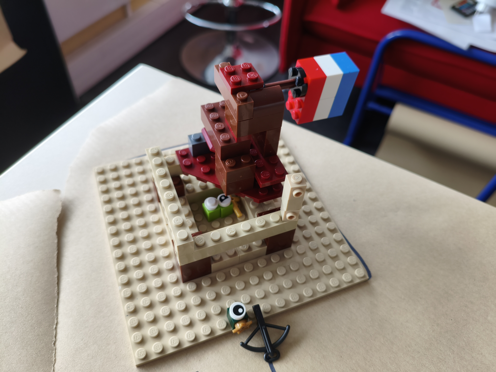
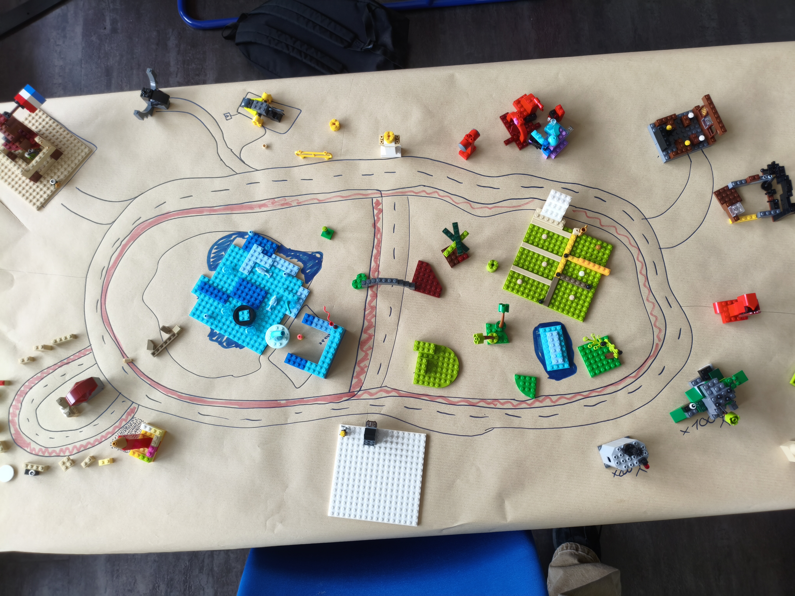
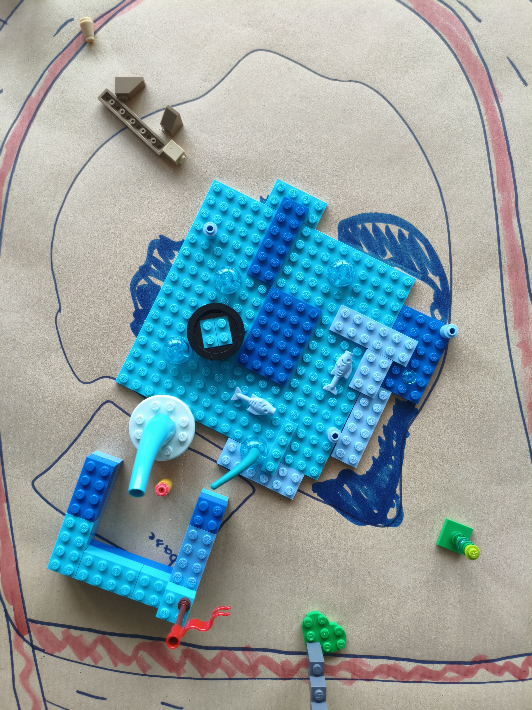
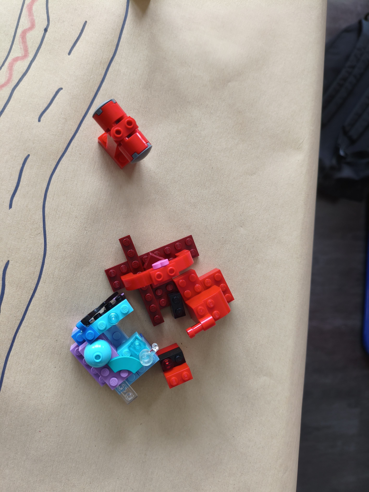
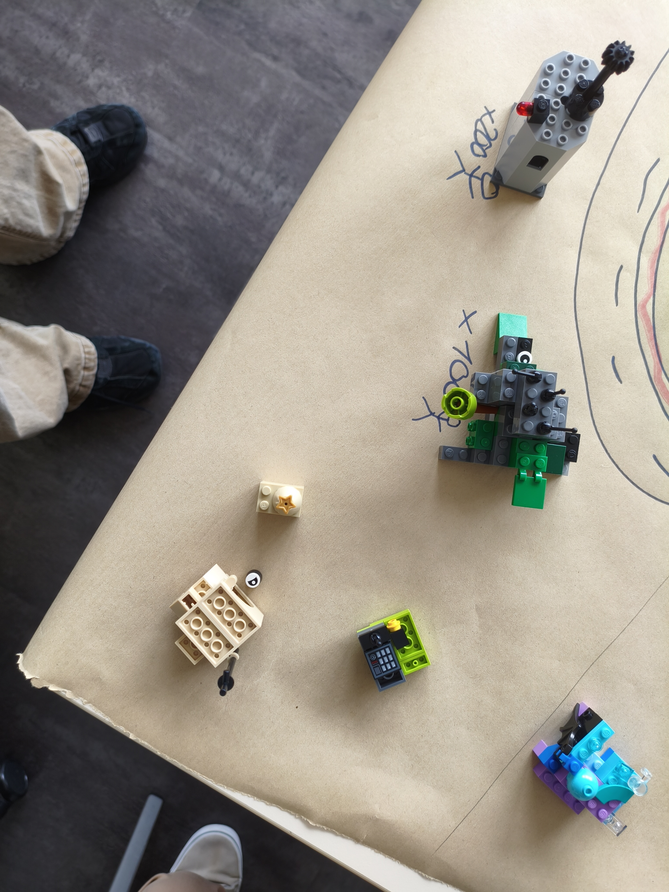

La Mairie
C'est là que les gens vont pour tout ce qui est administratif. Le maire y reçoit les habitants et prend les décisions pour la ville. Il a un garde devant la mairie avec une arbalète .
Une ville imaginaire

Auracity, c'est notre ville en Lego. Il y a une mairie pour gérer la ville, une école pour apprendre, un lac pour se détendre, un clubhouse pour traîner, une prison pour les fauteurs de troubles, et des maisons pour vivre. Tout ce qu'il faut pour que les gens soient bien (ou mal).

C'est là que les gens vont pour tout ce qui est administratif. Le maire y reçoit les habitants et prend les décisions pour la ville. Il a un garde devant la mairie avec une arbalète .

Les petits Legos viennent ici pour apprendre à lire, écrire, compter et construire. Il y a litérallement une seule salle de classe (pour 500 habitants by the way). De plus, il y a des bornes éléctriques pour les voitures qui utilisent le logiciel e-mobility de SAP Labs.

Les gens viennent s'y baigner, pique-niquer au bord ou juste admirer l'eau. C'est un endroit pas du tout calme pour se poser quand on veut être au frais même si il y a des bâteaux.

C'est le bar de la ville. Les gens viennent boire un verre, jouer aux cartes, regarder un match ou juste discuter entre amis (et aussi rencontrer batman).

C'est là que les gens capturées par Batman (aura) vont réfléchir à leurs actes. Au début on voulait que ce soit un immeuble résidentiel mais Milan décida autrement.

C'est là que les gens habitent. Des petites maisons ou 37 personnes habitent par chambre donc c'est limite un bidonville mais bon on en parle pas.